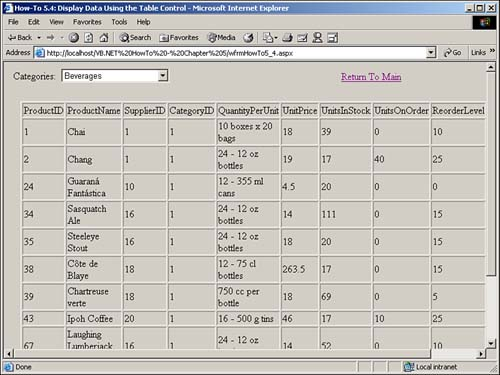

5.4 Display Data Using the Table Control
.NET has a number of controls available for displaying data. How do I know which control to use to display data, and how do I use the Table control to display data?
Technique
When you're first deciding to list data on your Web forms, you have a few Web server controls to choose from:
Table.
This Web server control allows you to create a read-only table type display of data. This control is not data bound, and it uses the TableColumn and TableRow objects for creation.
Repeater.
This control is used to display read-only lists. You can use hyperlinks and program the ItemCommand event so that you can perform actions when items are selected. You must use templates to format the display. Templates are discussed in How-To 5.5, as is the Repeater control. This is a great control for quick lists.
DataList.
Using this control, you will use templates not only to display, but also to select and edit data in the list.
DataGrid.
By far, this is the most powerful of the controls. In addition, it gives you the most control over manipulating data. You display, sort, edit, and use various types of controls in each column. The last three How-Tos in this chapter thoroughly cover the DataGrid control.
Anatomy of the Table Web Server Control
You can create the Table Web server control at design time, or as shown in this How-To, at runtime. The control is created by adding the TableRows and TableCells to the Table control. The TableRows and TableCells are controls in their own right. You can see the objects, properties, and methods that you will use to create the Table Web server control in Table 5.6.
Table 5.6. Using a Standard Method of Creating Objects Within Objects to Construct a Table Web Server Control
|
TableCell
|
Controls
|
Controls are added to an individual TableCell object using the Add method of the Controls collection. In this example, a LiteralControl object is used to display information.
|
|
TableRow
|
Cells
|
The Add method of the TableRow.Cells collection adds a new cell to the TableRow.
|
|
Table
|
Rows
|
The Add method of the Table.Rows adds the TableRow object to the collection of rows for the Table control.
|
You will see these objects and methods used in step 4.
Note
 |
One of the issues with using the Table control is that it does not persist in trips to the server and back. Therefore, you need to reconstruct the control in the page Load event, checking with the IsPostBack property. If you are tracking a lot of changes with the Table control, this is another good reason to use one of the other controls listed at the beginning of this technique.
|
Steps
Open and run the Visual Basic .NET-Chapter 5 solution. From the main page, click on the hyperlink with the caption How-To 5.4: Display Data Using the Table Control. When the Web Form loads, you will see a DropDown control displaying the list of categories. Below the DropDown control, you will see a Table control with the products for the selected category (see Figure 5.4).
Create a Web Form. Then place the controls listed in Table 5.7 and seen in Figure 5.4 with the following properties set.
Table 5.7. Property Settings for Label, DropDown, and Table Controls
|
Label
|
Text
|
Categories:
|
|
DropDown
|
ID
|
ddCategories
|
| |
AutoPostBack
|
True
|
|
Table
|
ID
|
tblProducts
|
| |
GridLines
|
Both
|
|
HyperLink
|
ID
|
hplReturnToMain
|
| |
NavigateURL
|
wfrmMain.aspx
|
Add the code in Listing 5.10 to the Load event of the page. If the page is first being loaded, then the dtCategories is filled and bound to the ddCategories dropdown. Last, the LoadProducts routine is called, which is described in the next step.
Listing 5.10 wfrmHowTo5_4.aspx.vb: Loading the Categories DropDown and Product Table Controls
Private Sub Page_Load(ByVal sender As System.Object, _
ByVal e As System.EventArgs) Handles MyBase.Load
'Put user code to initialize the page here
If Not Me.IsPostBack Then
Dim dtCategories As New DataTable()
Dim odaCategories As _
New OleDb.OleDbDataAdapter( _
"Select CategoryID, CategoryName From Categories",
BuildCnnStr("(local)", "Northwind"))
'-- Fill the data table, and bind it to the dropdown.
odaCategories.Fill(dtCategories)
ddCategories.DataValueField = "CategoryID"
ddCategories.DataTextField = "CategoryName"
ddCategories.DataSource = dtCategories
ddCategories.DataBind()
LoadProducts()
End If
End Sub
In the page's class module, create the LoadProducts routine shown in Listing 5.11. After creating a DataTable object called dtProducts and filling it with a DataAdapter object, the number of columns in the dtProducts is stored in intNumCols.
A TableRow object is then created, which will be used for the heading row of the table. It displays the column heads. Then, for each of the columns, a TableCell object called tcHead is created. A LiteralControl is added to it, which is derived from the ColumnName property of the data table for each column. Each TableCell object is then added to the TableRow object. After all the columns have been added, the TableRow object called trHead is added to the tblProducts Table control.
After the table headings have been created, the same commands are created for each row in the DataTable object.
Listing 5.11 wfrmHowTo5_4.aspx.vb: Loading the Categories DropDown and Product Table Controls
Private Sub LoadProducts()
Dim dtProducts As New DataTable()
Dim drCurr As DataRow
Dim intCurrRow As Integer
Dim intCurrCell As Integer
Dim intNumCols As Integer
Dim odaProducts As New OleDb.OleDbDataAdapter( _
"Select * From Products Where CategoryID = "
& ddCategories.SelectedItem.Value, _
BuildCnnStr("(local)", "Northwind"))
odaProducts.Fill(dtProducts)
intNumCols = dtProducts.Columns.Count
'-- Create the headings for the displayed table
Dim trHead As New TableRow()
For intCurrCell = 0 To intNumCols - 1
Dim tcHead As New TableCell()
tcHead.Controls.Add(New LiteralControl(dtProducts. _
Columns(intCurrCell).ColumnName))
trHead.Cells.Add(tcHead)
Next
tblProducts.Rows.Add(trHead)
'-- Add the rows and cells
For intCurrRow = 0 To dtProducts.Rows.Count - 1
drCurr = dtProducts.Rows(intCurrRow)
Dim trNew As New TableRow()
For intCurrCell = 0 To intNumCols - 1
Dim tcNew As New TableCell()
tcNew.Controls.Add(New LiteralControl(drCurr.Item(intCurrCell)))
trNew.Cells.Add(tcNew)
Next intCurrCell
tblProducts.Rows.Add(trNew)
Next intCurrRow
End Sub
Add the code in Listing 5.12 to the SelectedIndexChanged event of ddCategories.
Listing 5.12 wfrmHowTo5_4.aspx.vb: Loading the Categories DropDown and Product Table Control
Private Sub ddCategories_SelectedIndexChanged(ByVal sender As Object,
ByVal e As System.EventArgs) _
Handles ddCategories.SelectedIndexChanged
LoadProducts()
End Sub

Comments
You can see from this example that using the Table Web server control takes a bit of work, and if you have a lot of data to display, it could take quite a while to build. Also, remember that you can't edit the data that is built into the control.
If you have just a small amount of data to display, the Table Web server control could work out nicely.